Jakarta tracking atau jatra ialah aplikasi yang hadir untuk memberikan solusi pendataan terkait pandemic COVID-19 yang kita hadapi Bersama sama, terutama untuk kasus positif di DKI Jakarta. Berdasarkan data statistic sectoral DKI Jakarta pandemic ini berdampak pada turun nya jumlah wisatawan dalam negri maupun mancanegara yang mulai terjadi pada awal Januari 2020 dan terus menerus turun tajam hingga bulan April 2020 sebesar 99.8% dari April 2019. Wabah ini menyebabkan berubahnya prosedur aturan atau prosedur datang sampai pulangnya wisatawan yang ingin berwisata ke DKI Jakarta. Dan seperti yang di arahkan oleh Gubernur DKI Jakarta dalam Pergub Nomor 101 Ayat 1 Huruf Q diwajibkannya melakukan pendataan pengunjung agar mempermudah penyelidikan epidemonologi apabila ditemukan kasus positif COVID-19.
Tujuan
Dalam pengembangan perangkat lunak UI aplikasi Jakarta Tracking, memiliki tujuan dan manfaat yaitu;
- Untuk membantu penanganan kesehatan kepada pemerintah dalam mengetahui pendataan kunjungan pada sektor pariwisata maupun tempat usaha terbuka(seperti Mall,Coffe shop,Restoran,dsb)
- Dapat me-tracking NIK para pengunjung, sehingga dapat meminimalisir penyebaran Covid-19, kemudian juga dapat membantu pencegahan penyebaran dengan melakukan pembatasan atau penutupan sementara tempat usaha/pariwisata yang memiliki banyak data tracking penyebaran virus Covid-19.
- Membantu melakukan pendisiplinan pada masyarakat agar dapat selalu mematuhi protocol kesehatan dimana saja, terutama pada tempat umum rawan keramaian serta juga dapat membantu masyarakat untuk melakukan pembatasan pada diri sendiri.
Pengguna
pada saat membuat aplikasi ini hanya ada 1 sisi pengguna yaitu pemilik tempat usaha atau wisata dimana aplikasi ini berguna untuk pendataan jumlah pengunjung suatu tempat usaha tersebut. Dan aplikasi ini juga dapat membantu sang pelaku usaha dalam menjalankan usahanya yang sehat dan tetap menjalankan protocol Kesehatan yang berlaku

Peran dan Tugas
proses pembuatan aplikasi ini di kerjakan oleh tim. Dan saya disini sebagai UI designer utama yang memiliki tugas
- Membantu dalam merumuskan user flow
- Membuat wireframe
- dan terakhir membuat mockup aplikasi.
Ruang Lingkup dan Batasan
seperti yang saya jelaskan sebelumnya, aplikasi ini baru hanya memiliki 1 sisi pengguna yaitu sang pelaku usaha atau wisata yang memiliki cakupan sebagai berikut.
- dapat mengetahui status Kesehatan tempat usaha/wisata
- mendata pelanggan dengan men-scan NFC E-KTP
- mengetahui jumlah data pengunjung dan rata-rata suhu badan nya
- mengetahui jumlah maksimal pengunjung
- >mendapatkan informasi perkembangan terbaru tentang COVID-19
Kendala
Karena keterbatasan waktu dan jumlah tim yang hanya 3 orang, jadi kami tidak memiliki hasil penelitian lebih lanjut seperti wawancara atau menyebarkan quisioner. Maka solusi dari itu kita hanya melakukan riset melalu media internet dan jurnal-jurnal yang ada, dan kami rasa aplikasi ini cukup efektif dan memberi kemudahan pada setiap pelaku usaha maupun pelanggan itu sendiri. karena aplikasi ini berdasarkan Pergub DKI yang ada dan menyesuaikan keadaan yang terjadi
Proses
Pada proses desain ini yang pertama saya lakukan ialah membuat user flow lalu wireframe dan terakhir design mockup aplikasi.
User Flow
User dari ide-ide diatas dilanjutkan dengan membuat user flow dari user membuka aplikasi hingga user men scan NFC pada saat pelanggan keluar
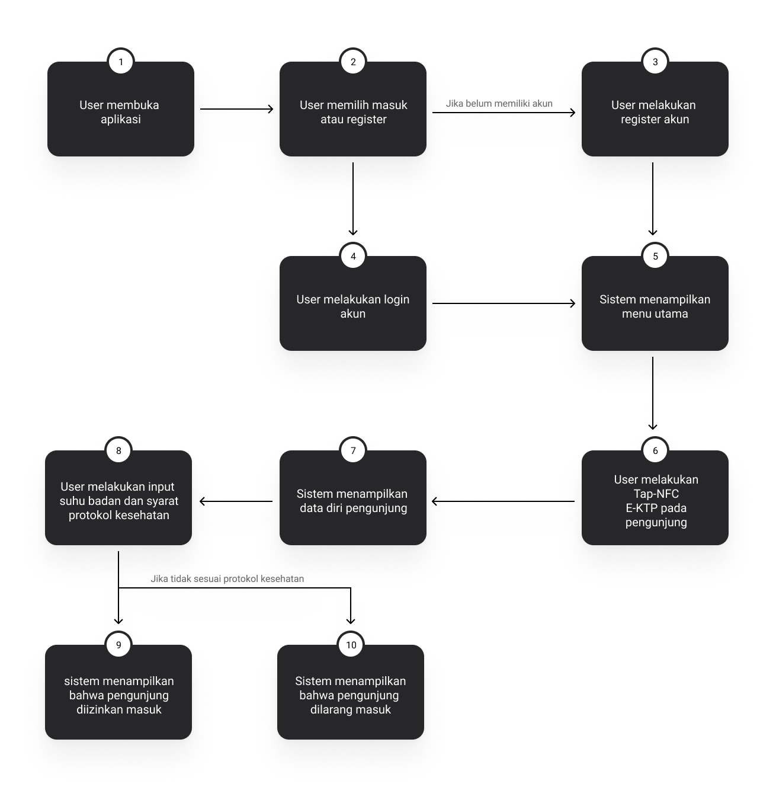Wireframe
Setelah membuat userflow dilanjutkan dengan membuat wireframe. hal yang dikemas pada wireframe ialah menginformasikan segala proses interaksi antara user dengan aplikasi. Saya membuat wireframe ini menggunakan figma dan pada proses ini saya menjelaskan alur proses user yang lebih tergambarkan dengan visual.
1. Wireframe Onboarding, Masuk, Register
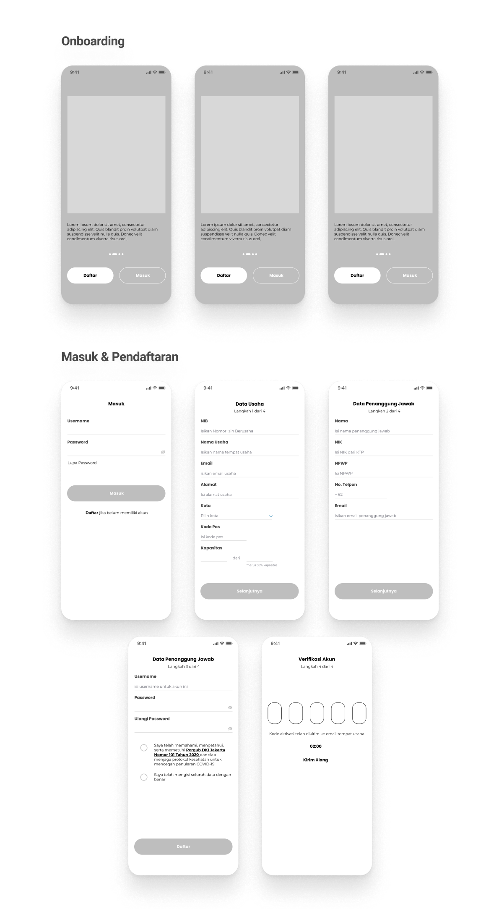2. Wireframe Fitur-fitur Aplikasi
Dibawah ini ialah wireframe dalam menggambarkan alur proses user setelah melakukan masuk dan register yang terdiri dari menu utama, scan masuk dan keluar, profile, notifikasi, detail masuk dan keluar pelanggan.
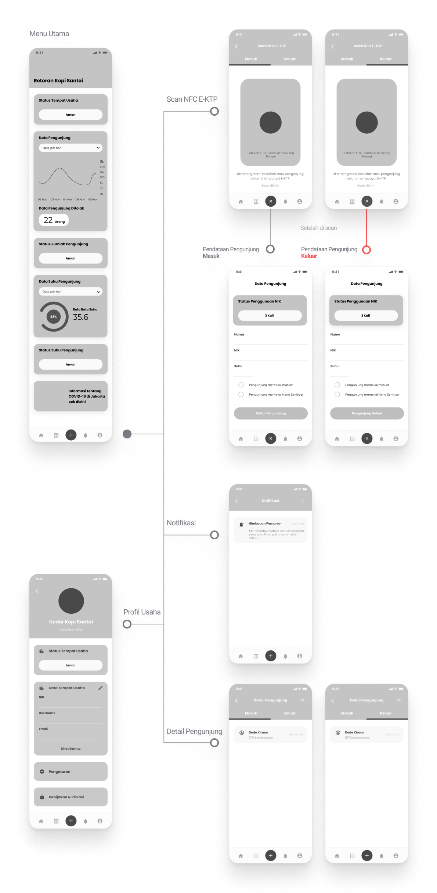Inspirasi
Pada mendesain aplikasi ini saya mencari inspirasi desain di dribbble dan tentunya aplikasi corona DKI Jakarta dimana proses style aplikasi dan pewarnaan banyak saya ambil dari website tersebut dimana hasil eksplorasi saya ini mendominasi warna biru dan putih agar terkesan simple. Saya akan share beberapa hasil dalam eksplorasi saya dibawah ini.
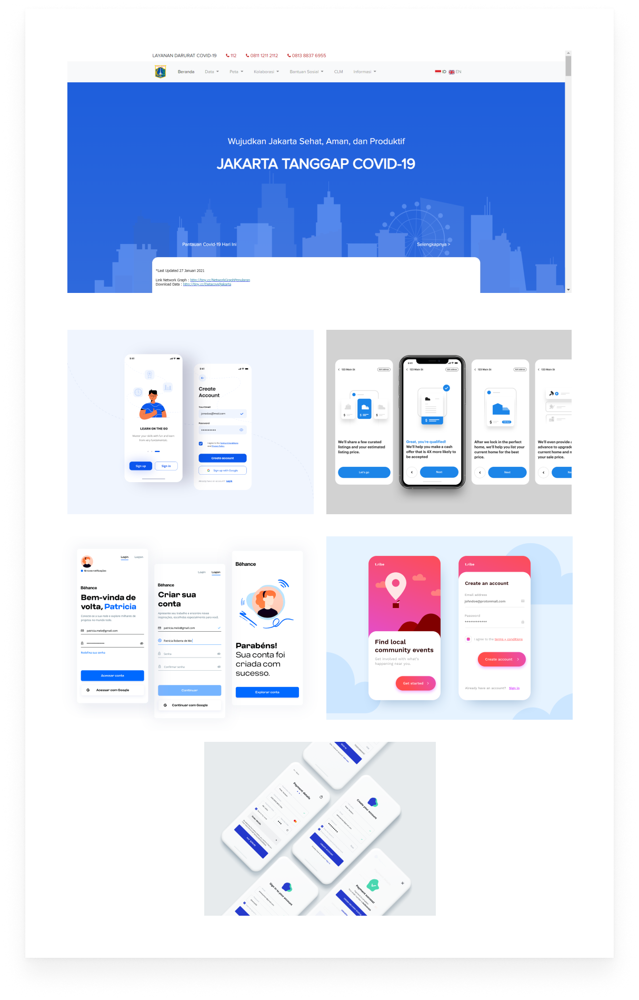Style dan Tipografi
Berdasarkan inspirasi diatas saya akhirnya memutuskan guideline dari style dan tipografi pada desain aplikasi ini sebagai berikut.

Mockups Design
Setelah menentukan guideline style, maka saya melanjutkan membuat high fidelity dari aplikasi Jatra tersebut..
1. Onboarding
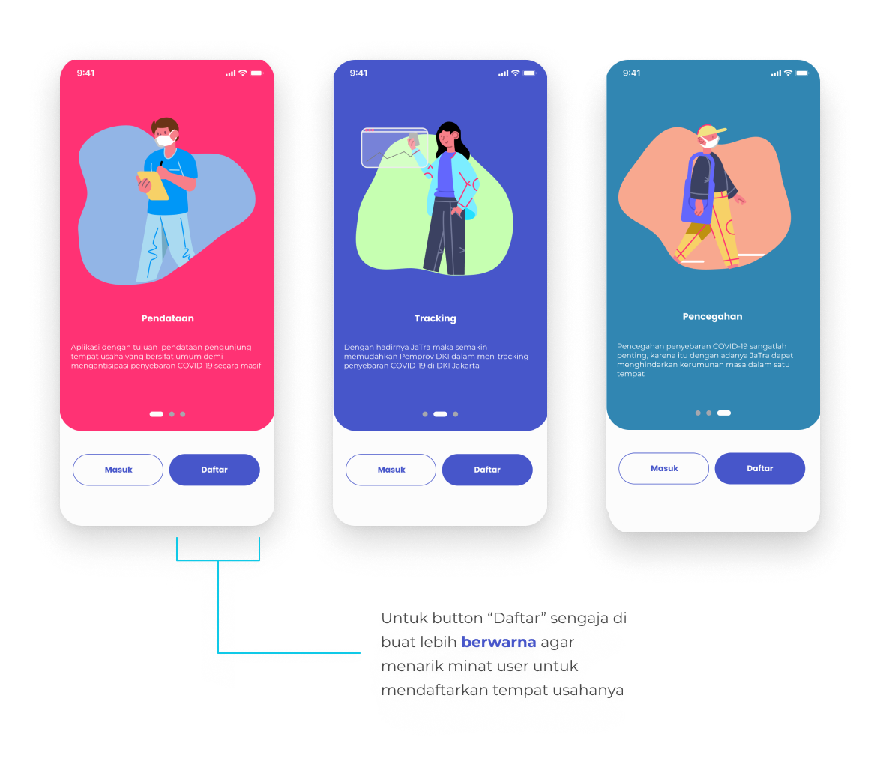Pada halaman onboarding ini user diberikan informasi awal dari fungsi aplikasi ini, user dapat men-swipe informasi dan saya menambahkan ilustrasi agar user dapat mencerna lebih cepat informasi yang diberikan.
2. Masuk dan Registrasi
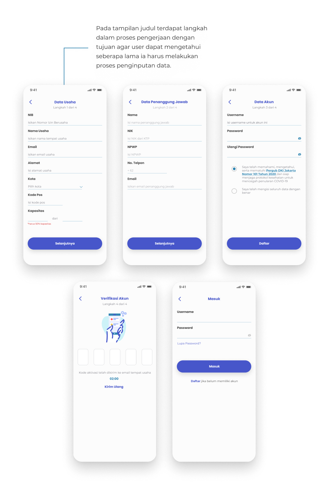User melakukan registrasi dan saya membagi beberapa langkah register agar user tidak terlalu bosan dan menganggap lama karna harus men-scroll terus menerus dalam mengisi form. Serta desain yang cukup simple dan banyak diketahui orang-orang dan lagi-lagi agar memudahkan user
3. Menu Utama
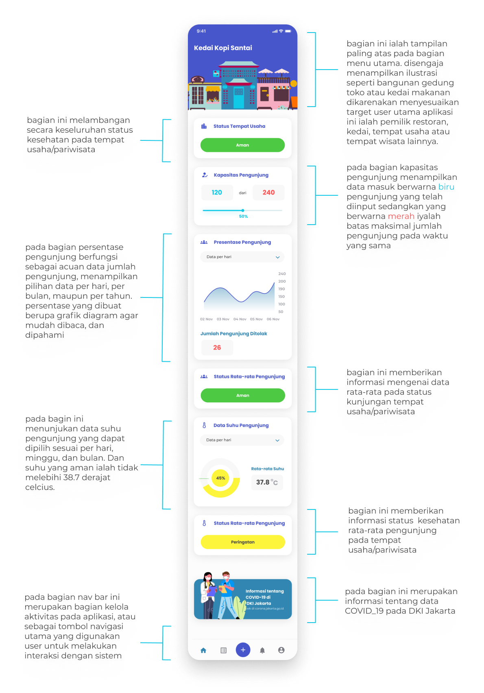Seperti penjelasan pada gambar diatas, inti dari menu utama ini ialah agar pihak restoran atau wisata dapat mengetahui perkembangan kesehatan pada tempat nya sendiri. Dan saya memuat semua data pada satu halaman yang sama dikarenakan agar user dapat membaca dengan cepat dan praktis tanpa harus berpindah-pindah halaman aplikasi.
4. Navigation Bar
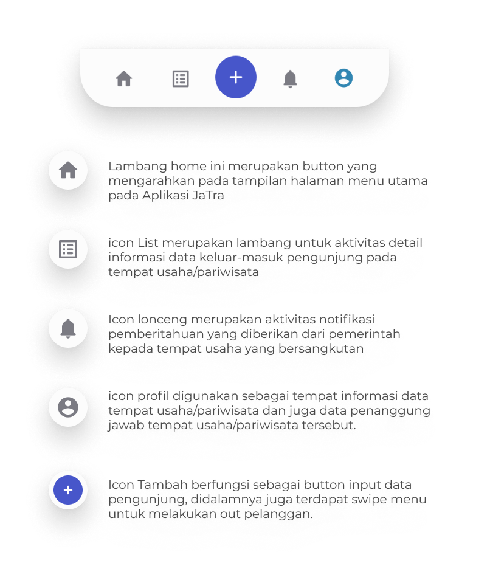5. Scan NFC E-KTP & Pendataan Masuk Maupun Keluar
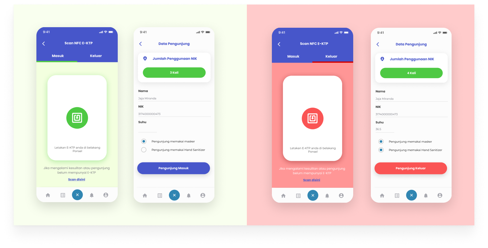
Pada proses ini bisa dilakukan oleh user yang menjaga pintu masuk sektor usaha atau wisata. Karena
itu saya membuat desain ini
cukup simple dikarenakan agar mengurangi antrian yang panjang pada proses pendataan tersebut. Maka
saya membuat fitur SCAN NFC E-KTP
tersebut dengan cara men-swipe kiri dan kanan untuk men-scan pengunjung masuk dan keluar. Setelah
itu NIK dan nama pengunjung akan langsung
tercantum di pendataan pengunjung maka user hanya mengisi suhu dan mencentang standar pengunjung
seperti masker dan penggunaan Hand sanitizer.
Begitupun dengan pengunjung keluar maka E-KTP akan kembali di scan, lalu user akan meng-klik tombol
tanda pengunjung keluar dan otomatis sistem
akan mengurangi jumlah pengunjung pada suatu termpat tersebut.
6. Pengunjung ditolak
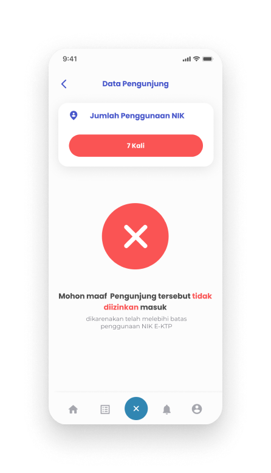
Pasti banyak yang heran mengapa ada total 'jumlah penggunaan NIK' pada menu pendataan. Sebelumnya
kami mendasari bahwa virus COVID-19
menular melalui interaksi orang ke orang lain yang terus berpindah-pindah lokasi. Karena diri kita
sendiri mungkin tanpa kita sadari
bisa menjadi carrier bagi orang lain. Oleh karena itu kesimpulan sementara dari kami ialah membatai
pergerakan orang lain dengan menghitung
dari jumlah NIK yang telah di scan dari berbagai tempat. Dan memang masih belum tersimpulkan berapa
jumlah batasan penggunaan NIK ini karena
hal tersebut memperlukan beberapa faktor pendukung atas penentuan jumlah batasan tersebut.
Namun, pada aplikasi ini saya tetap membuat desain interface nya jikalau memang ada pengunjung yang
ditolak masuk dikarenakan telah melebihi
batas maksimal penggunaan Scan E-KTP.
7. Menu Profil Usaha
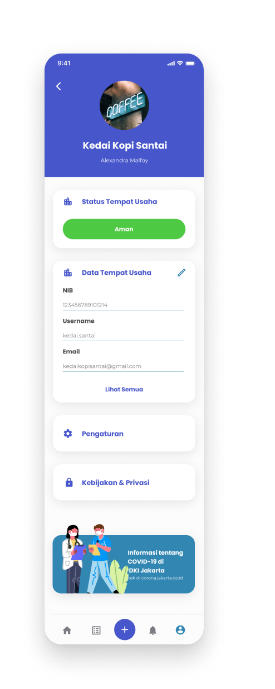Profile usaha tersebut berisikan data-data usaha yang telah diisi dan dapat diedit kembali pada menu ini.
Kesimpulan
Pada kesimpulan kali ini, saya berharap aplikasi JATRA dapat menjadi solusi dalam menanggulangi pandemi COVID-19. Dalam proses pendataan dan mengecek pergerakan masyarakat demi terhindar dari kerumunan pada satu tempat dan menyebabkan penularan virus yang dapat membahayakan diri sendiri maupun orang lain.